Project 4
Neural Radiance Fields (NeRF)
This project explores neural radiance fields for 3D scene representation and novel view synthesis. The implementation covers camera calibration, 2D image fitting with neural fields, and multi-view NeRF training.
Part 0: Camera Calibration and 3D Scanning
In this part, I took images that I will use later to calibrate my camera and generate a NeRF. Calibrating camera intrinsics is required to generate the ray data that the training will use. Here, you can see camera frustums visualization showing the calibrated camera positions and orientations.
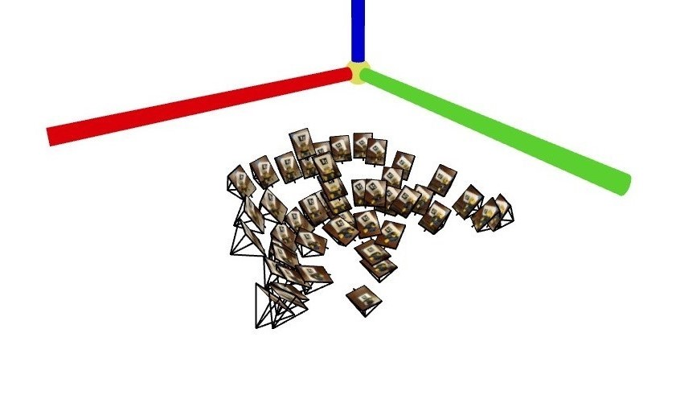
Camera Frustum Visualization 1
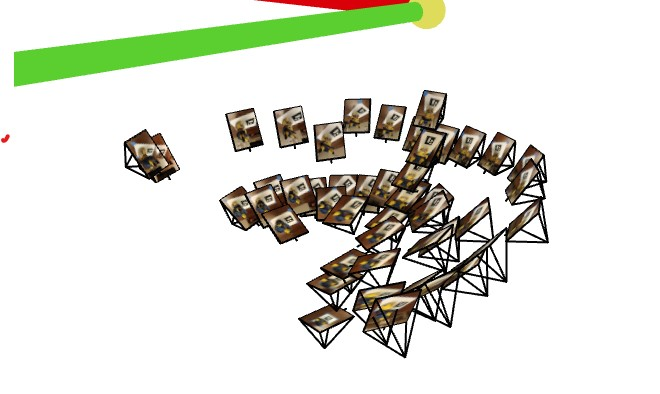
Camera Frustum Visualization 2
Part 1: Fit a Neural Field to a 2D Image
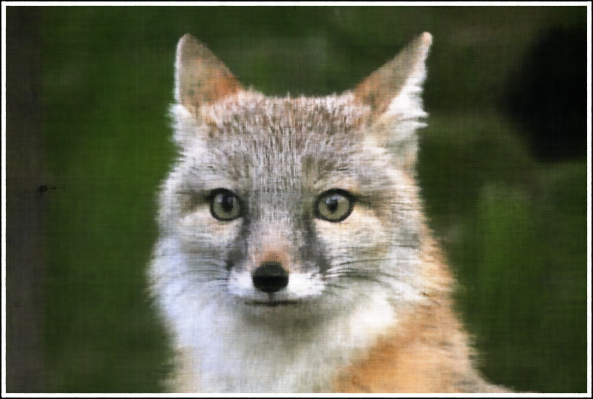
Fox Image L10 256
Osulloc Image L10 256
Model Architecture Report
The learning rate I used was 0.01, the batch size was 10000, the number of iterations wass 2000. Here is the training progression shown in a graph of Peak-Signal-to-Noise-ratio along with the loss function over each iteration.
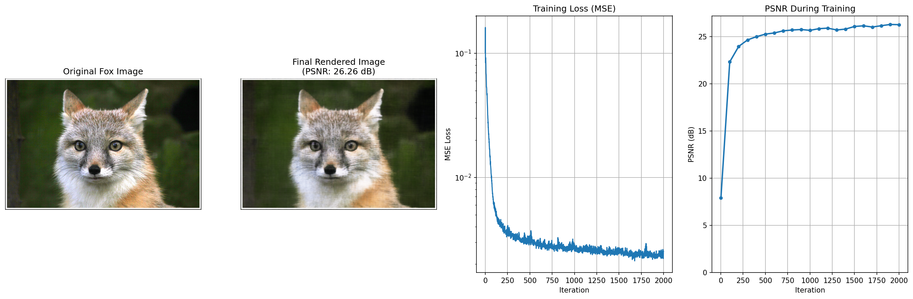
Fox Neural Field Results
Training Progression Visualization
This is what training progression looks like for 1000 iterations of neural field passes.
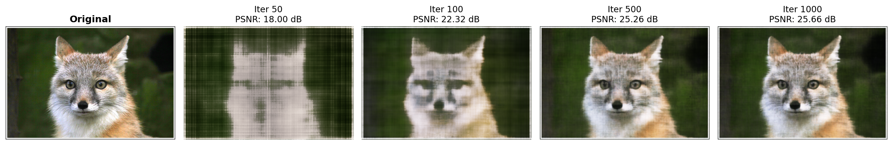
Fox Intermediate Images
| Width = 4 | Width = 64 | Width = 256 | |
|---|---|---|---|
| L = 2 |
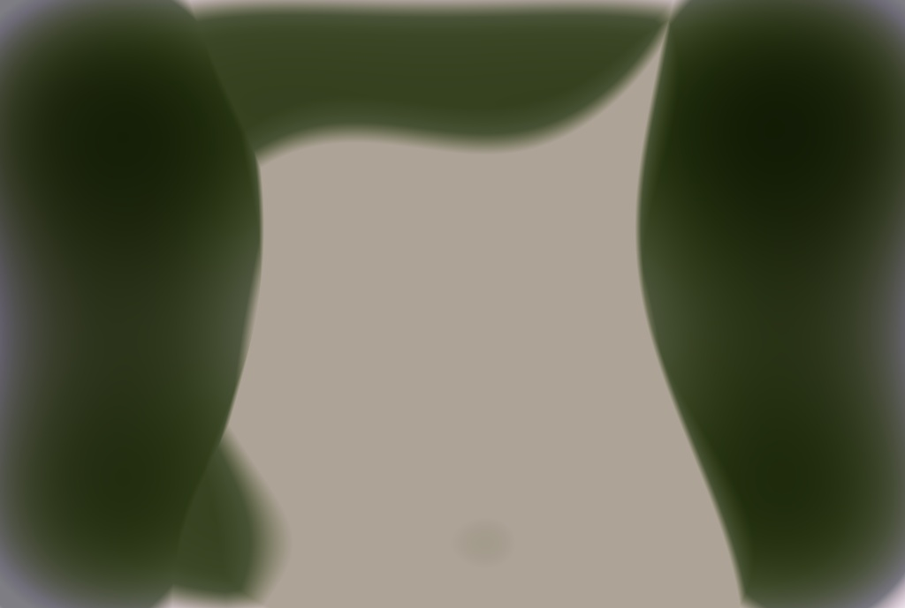 |
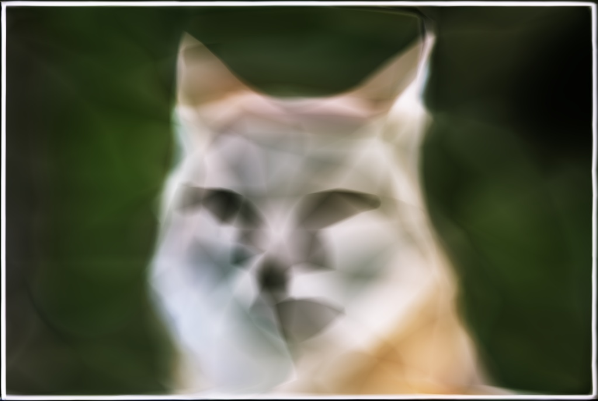 |
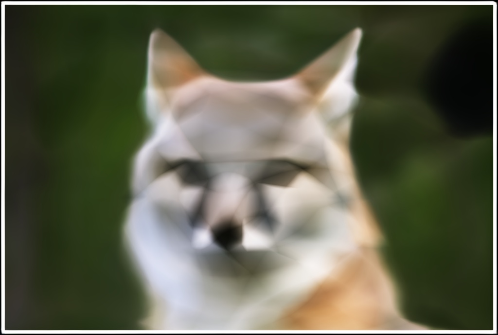 |
| L = 10 |
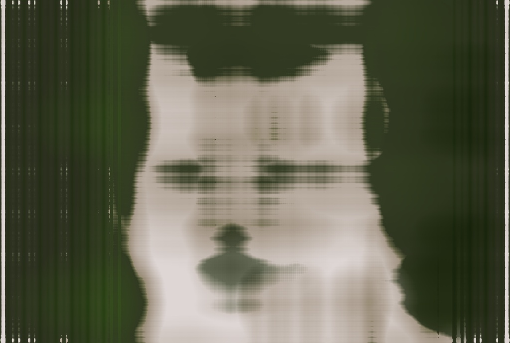 |
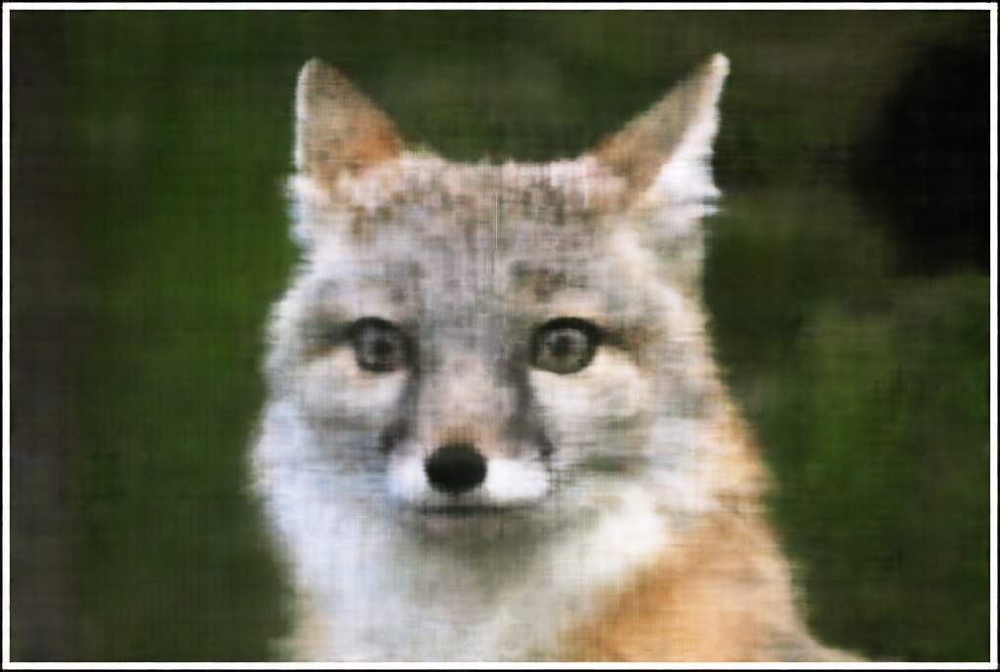 |
|
| L = 100 |
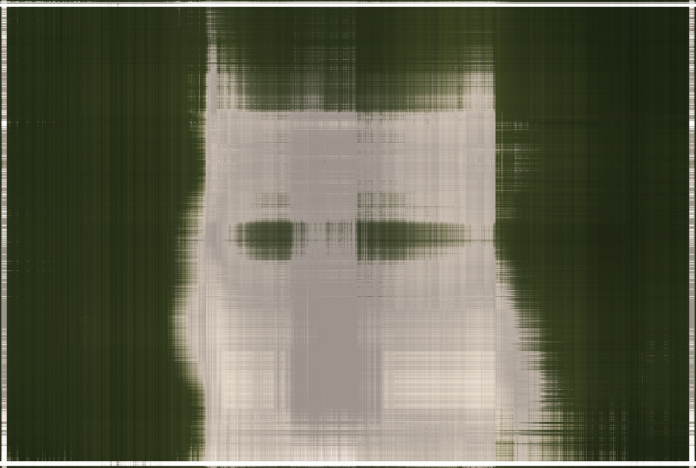 |
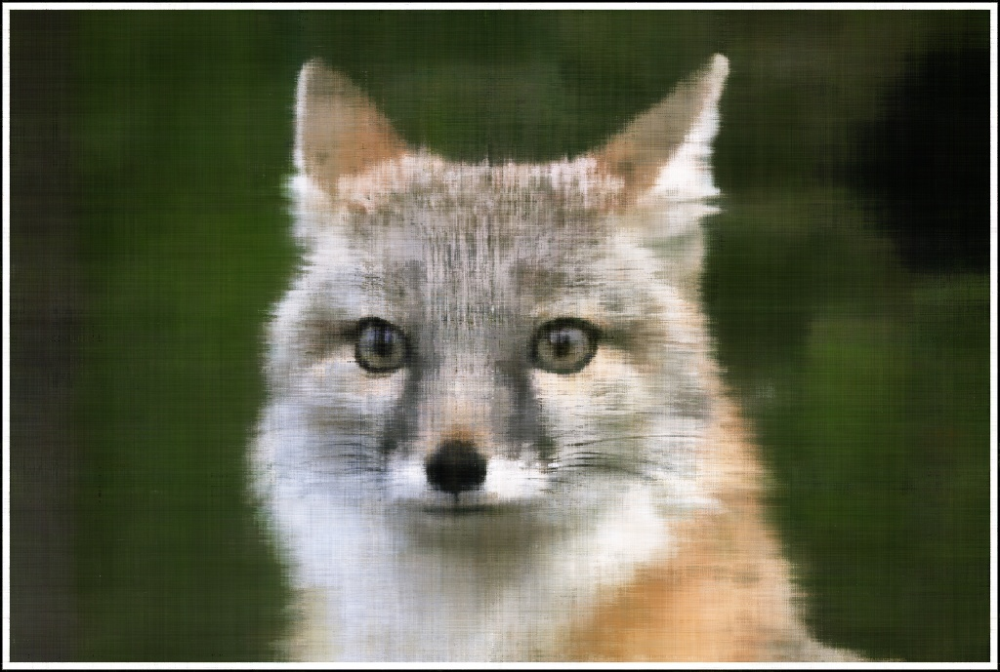 |
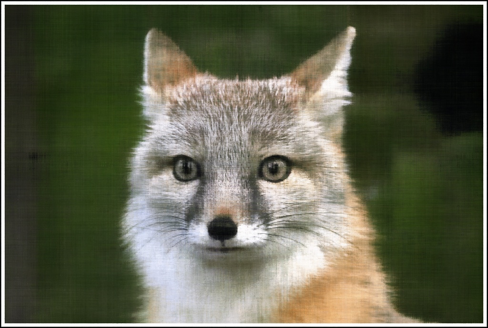 |
Final Results: Positional Encoding Frequency and Width Variations
Here you can see a visual representation of how the width and positional encoding of of the network affects the images. If not enough frequency information is given, the image loses sharpness and is blurry. Conversely, it gets a bit too sharp when the positional encoding is blown up.
The width is the number of parameters in each layer of the network. When this variable is too small, the network cant store the full information of the image and fails to capture color details especially. When this is too large, the image actually is great, but there is risk of overfitting with more difficult tasks and training will take much longer.
Part 2: Fit a Neural Radiance Field from Multi-view Images
Implementation
Now, I will be moving on towards a 3d representation and Neural Radiance Field. In order to do this, we now need to consider the depth, position, and viewing angle of each point.
Ray Sampling
For each pixel in an image, we can build a ray that passes through the camera center. This ray is how we will represent all of the data in our scene. To obtain these rays, we can use the extrinsic and intrinsic camera matrices we generated from before to construct each ray. Simply put, these matrices map the pixel coordinates to the 3d world coordinates. With the camera orientation also contained in the extrinsic matrix, we can construct a ray in space.
Ray Sampling:
For sampling, I plot uniform points across my rays, treat the space in between as bins, and plot points randomly within each bin.
Ray Rendering:
This is a visualization of what my ray sampling would look like. Here I show a single ray coming out of each camera frustum and a bundle of rays coming out of one frustum to make this more easily visible. The model is fed random bundles from each frustum.
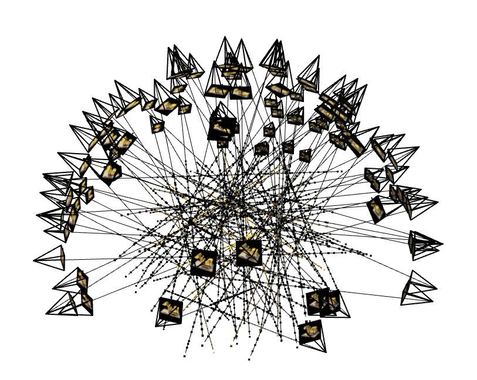
Cloud Ray Visualization
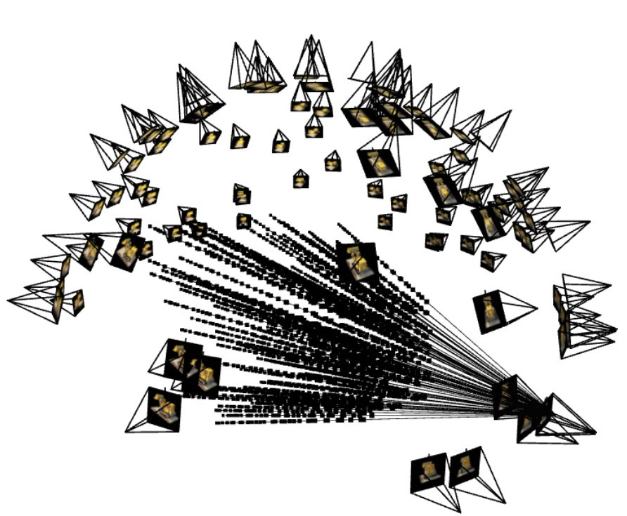
Cloud Ray Bundle Visualization
Model Architecture:
The model I'm using has the standard architecture to the tee, here is a visual representation of the layers.

MLP NeRF Architecture
Model Feedback and Volume Rendering:
Them magic to this is the volume rendering equation. The equation is a model of how a point in space will look when viewed from a given angle. This varies on opacity. A similar idea to this is the density represented by the sigma value. After discretely adding up all of the points along a ray, we can guage the difference between the true color and the color predicted by the model.
\[\hat{C}(\mathbf{r}) = \sum_{i=1}^{N} T_i \left( 1 - \exp(-\sigma_i \delta_i) \right) c_i, \quad \text{where} \quad T_i = \exp\left( -\sum_{j=1}^{i-1} \sigma_j \delta_j \right)\]
Other Implementation Details:
Lego Set
Lego Set Video
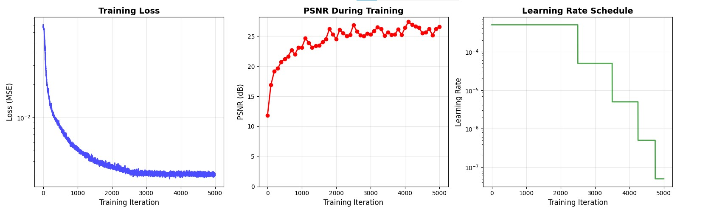
Lego Set Graphs
Lafufu and Pikachu
Lafufu Video
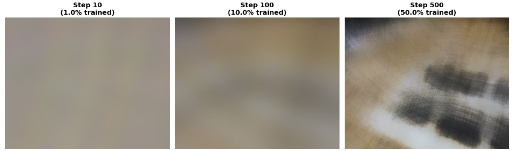
Lafufu Attempt
Pikachu Video